Sonreí: nadie te filma
Thu, 24 Nov 2011 20:57:44 +0000
¿Nunca sentiste como si fueses víctima de un reality show al estilo Truman Show, donde todo el mundo sabe que te están filmando menos vos? ¿Nunca dijiste “pará… es una joda de Tinelli, no”? ¿Nunca pensaste “esto es demasiado raro para ser cierto”? A mí me pasa bastante seguido, especialmente cuando viajo. Creo que a [...]
¿Nunca sentiste como si fueses víctima de un reality show al estilo Truman Show, donde todo el mundo sabe que te están filmando menos vos? ¿Nunca dijiste “pará… es una joda de Tinelli, no”? ¿Nunca pensaste “esto es demasiado raro para ser cierto”?
A mí me pasa bastante seguido, especialmente cuando viajo. Creo que a todos nos pasa cuando viajamos, ya que todo lo que nos rodea es “nuevo”, “raro” y “sorprendente” y es lógico que las situaciones que vivimos sean “nuevas”, “raras” y “sorprendentes”. Pero me parece aún mejor cuando esto nos pasa en nuestro lugar de origen, cuando lo conocido se tiñe de bizarro, lo cotidiano se altera y vivimos un momento cargado de Realismo Mágico (mi género literario preferido, les comento).
Estos días me está pasando bastante.
Todo empezó, creo (ya ni sé), cuando iba en el colectivo rumbo a Belgrano y vi, en uno de los carteles de las paradas, la siguiente calco:
Como saben (o no), esta serie de posts denominada Amigate con Buenos Aires surgió gracias a la inspiración de una de las calcos de Proyecto Calco en la que decía, simplemente, “Amigate”. La tenía pegada en el espejo de mi casa y la leía todos los días; de repente una tarde me inspiró, una cosa llevó a la otra y terminé escribiendo posts de amor desenfrenado hacia Buenos Aires, ciudad que me encanta y me desencanta. Unos días después, además, me choqué con la calco “Sorprendete” en las escaleras del subte y todo empezó a tornarse… sospechoso. Hace dos días, cuando vi la calco de “Sonreí” pegada en la parada del bondi me reí sola (¡funcionó!) y después pensé: “Acá hay algo raro, las calcos me persiguen”. Y así fue como empezó lo que voy a denominar Día de Persecución de Carteles Bizarros.
Pero antes de eso, un poco más de las situaciones realisticamentemágicas o magísticamentereales que me pasaron estos días.
Como conté en el post anterior, estoy alojando viajeros en el sofá de mi casa. Mis huéspedes actuales son de Estados Unidos (ella) y de Perú (él). Cuando entraron a casa y nos vimos las caras, Oliver (claramente el “él” de esta historia) me dijo que ya nos conocíamos. Libby, ella, me preguntó si había estado en Perú en los últimos meses. Casualmente, sí, estuve. ¿En qué parte? Lima, Cusco, Huaraz, Huacachina, Punta Negra… ¡Nosotros también! ¿Escalaste el Pastoruri? Sí… ¡Nos conocimos ahí! ¿Pero tenías el pelo más largo, no? Así es… Así que mis huéspedes y yo nos conocimos hace unos meses a 5000 metros de altura en el famoso nevado Pastoruri, nunca hablamos ni mantuvimos contacto y ahora, de repente (Couchsurfing de por medio), están en mi casa. No me digan que no es curioso.
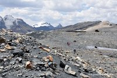
Nos conocimos por acá. A la vuelta.
El domingo pasado salimos a caminar y nos fuimos a la casa de otro peruano amigo de Oliver que vive en Buenos Aires hace unos 8 años. Casualmente, muy cerca de mi casa. Para llegar pasamos por una intersección de San Telmo a la que no voy tan seguido los domingos (Cochabamba y Paseo Colón, por ahí) y tuve un “Sorprendete” bis: había mucha vida callejera-artística, mucha gente sentada en la vereda sacando fotos, una feria bajo la autopista y una voz que gritó “¡dale bo, apurate!”, seguido de un grupo de candombe que avanzaba por la calle empedrada. A mí no me engañan: ¡estoy en Montevideo! Seguimos caminando, llegamos hasta Defensa y encontramos una banda muy buena al estilo Dancing Mood que tocaba en la calle. Todo esto está armado para mí, ¿no? Son esas alegrías de domingo que me da esta ciudad.
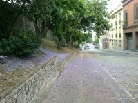Qué lindos que están los árboles florecidos… (las fotos son medio malas, las saqué con el celular)
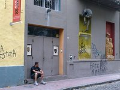
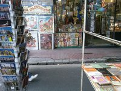
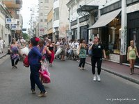
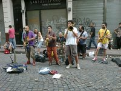
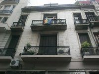
Unos días después, mi amiga Delfi (viajera también) y yo bajábamos por el ascensor de mi edificio. Como vivo en el piso 18, el trayecto da para charlar. Íbamos con la vecina del 19, una señora que debe tener unos… ¿80 años? Delfi me preguntó qué lugares iba a recorrer en mi próximo viaje y yo le dije que en principio planeaba ir a España, Portugal y Marruecos. Cuando llegamos a la planta baja, la señora, que obviamente había escuchado todo, me dijo: “¡Hacen muy bien chicas! ¡Hay que viajar! Yo de joven me la pasé viajando, me recorrí todo y me casé recién a los 55. ¡Disfruten que son jóvenes!”. Inesperado. Quiero ser su amiga y que me invite a tomar el té para charlar de viajes.
Y ahora sí, los carteles cómicos que me encontré por Buenos Aires.
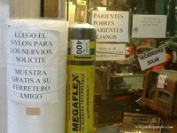
La ferretería con más buena onda del mundo. ¡Quiero nylon para los nervios!
Lo de “Pronto Navidad” me hizo mucha gracia, no sé por qué.
 Sin palabras. Cuando lo leí, tardé un rato en caer en quién era “santa”.
Sin palabras. Cuando lo leí, tardé un rato en caer en quién era “santa”.
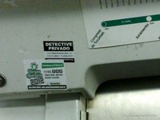
¿Alguien necesita detective?
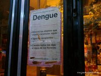
¿Cuántos años tiene este cartel? ¡Yo ya tuve dengue! ¿Me gano algo?
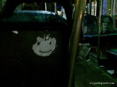
Lo rasparon con forma de carita feliz.
Hay paroooooooooo!!!
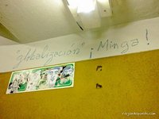
¡Minga!
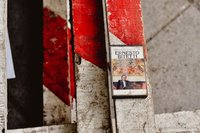
…y un cassette dejado a su suerte.
Y el último, al que no le saqué foto no sé por qué, fue genial. En una esquina de Belgrano R hay una verdulería que da a la calle. Las frutas están apiladas, muy prolijitas. Encima de las frutas hay un cartel electrónico (?) (no sé cómo se llama este tipo de cartel) de fondo negro por dónde avanza un mensaje en letras rojas: “HAY LIMA”, decía, y las letras se iban corriendo de derecha a izquierda y se perdían en el margen del cartel. Después volvían a entrar: HAY LIMA, anunciaban. Mi imaginación me dijo: Seguro que ahora van a poner “Hay lima, y hacemos las mejores caipirinhas del barrio”. Pero no.
¿Será que la que cambió es mi mirada y tengo el Modo: Bizarro ON?
Este post forma parte de Amigate con Buenos Aires, un Mini Proyecto Fotográfico de Viajando por ahí. Podés leer todos los post de esta serie haciendo click en este enlace.
No conozco Europa
Wed, 16 Nov 2011 02:39:45 +0000
Conversación clásica que se puede dar entre una persona cualquiera y yo: —¿Por dónde viajaste ya? —Bolivia, Perú, Ecuador, Colombia, Centroamérica, Tailandia, Malasia, Singapur, Indonesia, China, Laos, Vietnam, Camboya [+ toda la lista de países que digo sin repetir, sin soplar y sin respirar cada vez que me preguntan] —Y Europa conocés… ¿no? —No. —¿Cómo [...]
Conversación clásica que se puede dar entre una persona cualquiera y yo:
—¿Por dónde viajaste ya?
—Bolivia, Perú, Ecuador, Colombia, Centroamérica, Tailandia, Malasia, Singapur, Indonesia, China, Laos, Vietnam, Camboya [+ toda la lista de países que digo sin repetir, sin soplar y sin respirar cada vez que me preguntan]
—Y Europa conocés… ¿no?
—No.
—¿Cómo que no? ¡¿Fuiste a Asia pero no conocés Europa?!
—Bueno, sí, pasé unas horas en el Aeropuerto de Frankfurt, pero no cuenta, ¿no?
—¿Y por qué todavía no viajaste a Europa?
—Nunca tuve la posibilidad y siento que es muy caro. Ya iré…
Entre los argentinos parece haber un acuerdo generalizado: primero, conocé Europa, después, lo que quieras. Al menos a mí me pasa que todos se sorprenden de que no conozco Europa, pero nadie se sorprende de que no conozco África o Medio Oriente u Oceanía… ¿Será que el tema de las raíces nos tira hacia allá? ¿Será que como la mayoría de nuestros abuelos llegaron en barco, nosotros sentimos que tenemos que volver para allá, aunque sea de visita una vez en nuestras vidas? ¿Será que irse de eurotour a los veintipico es un clásico? ¿Será que Europa siempre estará de moda? ¿Será que la gente quiere que viaje por países “organizados” y que la corte con el tema de lo exótico? No sé, pero cada vez que digo que no conozco Europa, recibo la misma mirada de sorpresa: ¡¿Cómo que no conocés Europa?!
No señores, nunca fui a Europa. Mi mamá es nacida en Hungría, la familia de mi papá es de España, y yo, ingrata total, nunca fui a Europa. En realidad, una vez estuve “a punto” de ir a Europa del Este y al final cambié el destino por Asia porque no me daba el presupuesto (aunque las ganas no me faltaban).
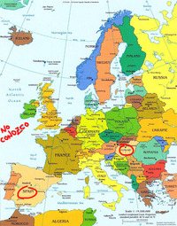Siempre quise viajar por el mundo, sin importar a dónde ni en qué orden, pero a la vez siempre tuve países/regiones/continentes que me tentaron más que otros, como Europa del Este, Asia Central, Medio Oriente y Oceanía. La Europa “clásica” nunca me llamó tanto la atención, será porque es uno de los destinos más populares, difundidos y comentados del mundo. Nunca fui a París pero me conozco la Torre Eiffel de memoria y puedo oler las baguettes recién hechas desde acá, tampoco anduve por Venecia pero conozco perfectamente la vestimenta de los gondoleros y hasta los escucho cantar. Entonces con Europa siempre me pasaron varias cosas: 1) “no me da el presupuesto y si voy quiero hacerlo bien”, 2) “no sé si voy a tener tantas sorpresas como en Asia/Oceanía/Medio Oriente”, 3) “no creo que Europa cambie tanto, primero quiero ir a lo exótico y después a lo cómodo”.
***
Dicho todo esto, les cuento la noticia: en menos de diez días me voy a España por tiempo indefinido y estoy más que feliz. Se sorprendieron, ¿no? Cuando surgió la posibilidad, me cerró por todos lados. En principio el plan era ir unos pocos días a España, de ahí a París, tomar el vuelo de Air Asia a Kuala Lumpur (es lo más barato para ir de Europa al Sudeste Asiático) y de ahí un vuelo a la India antes de mediados de diciembre. Pero después pensé, ¿para qué apurarme tanto?
Y de repente empezaron a surgirme invitaciones en España: tengo familia en Asturias y ya me pidieron que pase Navidad con ellos, tengo amigos argentinos en Madrid, tengo a mi hermana en Calella, tengo bloggeros/viajeros amigos en Barcelona, en Badajoz, en Cantabria, tengo el mar Mediterráneo que me espera en el sur, tengo Portugal ahí tan cerca, tengo tanto para ver que sería casi un pecado quedarme solamente unos días. Mi única preocupación es el presupuesto, pero voy de mochilera low cost como siempre, así que espero encontrar buenos precios y no morir de angustia ni de hambre.
Siento que viajar a España va a ser como volver a un hogar que nunca conocí donde voy a reencontrarme con amigos y familiares. Me parece muy raro ir a un país donde se hable español fuera de América latina (aunque nuestro idioma en realidad venga de allá), me parece increíble saber que voy a conocer un lugar con el que estamos tan ligados por la historia. Durante mis viajes conocí a muchísimos españoles y, ahora que lo pienso, son los europeos con los que mejor onda pegué, tal vez porque en el fondo somos bastante parecidos (o no… ya lo averiguaré).
Esto de volver a viajar me pone verborrágica (como ven hoy hay poca foto y mucho texto), ansiosa e indecisa. Por ahora lo único que sé es que voy a España y (que quiero ir) a Portugal. Después, no sé. Si siento que todo me resulta muy caro, buscaré la manera más rápida y barata de llegar a la India, pero si veo que puedo, seguiré recorriendo Europa, con rumbo a Europa del Este… ¿Y si voy a Marruecos? Voy a estar tan cerca… ¿Y si llego a la India por tierra? Suena MUY tentador. ¿Y si me gano la lotería? ¿Por qué soy tan poco organizada? Me cuesta mucho marcar una ruta fija, me gusta estar abierta a las posibilidades que surjan en el momento, me es imposible planificar mis viajes/vida con anticipación. No me pregunten cuándo vuelvo porque no tengo idea. Sólo se que me voy.
Me voy a Europa. Inesperado. Ya veo los gestos aprobatorios: bueno, por fin esta chica va a conocer Europa, ahora va a ver lo que es viajar con comodidad, ahora va a ver lo que es el primer mundo. Igual lamento decepcionarlos pero no voy en busca de comodidad, voy en busca de experiencias, de personas, de momentos.
En unos días voy a dejar de ser la viajera que no conoce Europa. Y me voy a sacar fotos geniales como estas.
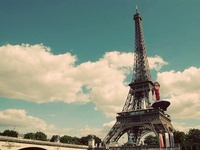
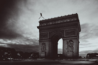
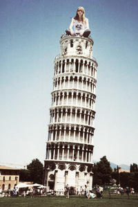
—-
Si quieren ayudarme a planear un poco, comenten y dejen todos los consejos y recomendaciones que quieran: precios, lugares imperdibles, rincones ocultos, pueblitos, paisajes, lo que quieran compartir de Europa.
Sorprendete
Mon, 07 Nov 2011 23:11:54 +0000
Situación: Mi mamá me da un piloncito de calcomanías que me dejó mi amigo de Proyecto Calco en portería y me pregunta “¿Para qué son?”, y yo le respondo: “Para desparramar mensajes positivos por el espacio público y alegrarle el día a las personas”, “¡Ahhh…!” (sonríe). Fin de situación. Como les conté en el primer post [...]
Situación: Mi mamá me da un piloncito de calcomanías que me dejó mi amigo de Proyecto Calco en portería y me pregunta “¿Para qué son?”, y yo le respondo: “Para desparramar mensajes positivos por el espacio público y alegrarle el día a las personas”, “¡Ahhh…!” (sonríe). Fin de situación.
Como les conté en el primer post del proyecto, Amigate con Buenos Aires surgió gracias a una de las calcos de Proyecto Calco que dice, justamente, “Amigate” y que me impulsó a reconciliarme fotográficamente con mi ciudad. Pero hace poco me di cuenta de que la calco que más me estaba haciendo efecto era otra, la que dice “Sorprendete”. Y para ella va dedicada este post.
***
Cuando leí por primera vez El mundo de Sofía de Jostein Gaarder (hace por lo menos 10 años) hubo una frase que me quedó grabada para siempre. Decía algo así: “El filósofo debe ser como un niño y nunca perder la capacidad de asombro frente al mundo”. Esa idea de asombrarse frente a “lo normal” me pareció clave para poder ver el mundo de otra forma y jamás dar las cosas por sentado.
A veces, cuando me enfrasco en una rutina y la repito durante varios días y/o meses, me doy cuenta de que naturalizo todo lo que está a mi alrededor y el lugar por el que camino me parece ordinario, cotidiano, normal. Me pasa cuando estoy demasiado tiempo en Buenos Aires y me pasa después de varios meses de estar viajando. Como el viajar se vuelve, quiera o no, una rutina, hay días en que veo las cosas con ojos de “ah, otro Buda, ah, otro templo, ah sí, otro río, ah mirá, más monjes”. Y en esos momentos me peleo contra mí misma y me digo: Mirá donde estás, mirá todo lo que estás viendo, no seas tarada, ¡sorprendete! Que el mundo no es un lugar normal.
Desde que volví a Buenos Aires pasé por muchos estados: tristeza (lo que llamo la Depresión Post-Viaje, un tema sobre el que me explayaré más adelante en algún post bajonero), melancolía, sentimiento de no pertenecer, sentimiento de sí pertener, euforia, redescubrimiento, reconciliación y, hace unos días, sorpresa constante.
Tuve a dos chicas de Estados Unidos viviendo en casa durante unos días (Couchsurfing) y me contagiaron su mirada outsider. Ahora, cada vez que salgo a caminar, encuentro algún detalle, edificio, monumento, situación, evento, tribu urbana o persona que me sorprende.
Acá van algunas:
* Una situación: el viernes pasado salí de mi casa a la noche y me encontré con un set de filmación a pocos metros de mi edificio. Había muchas luces, cámaras, cables y personas muy cool sentadas en sillitas de director y maquillandose. Hollywood in Buenos Aires.
* Un barrio: Puerto Madero. Hace un tiempo empecé a andar en bici por esa zona. Antes me iba directamente a la Reserva Ecológica, pero hace unas semanas decidí recorrer Puerto Madero en sí y casi me caigo de la bicicleta con tantas distracciones, tanto museo y tanto edificio. Estoy anonada frente al crecimiento de Puerto Madero. ¿Ustedes vieron lo que son esas torres? ¿Ustedes vieron los parques que hay en el medio? ¿Ustedes vieron los museos? Singapur in Buenos Aires.
A ver si descubren el detalle de esta foto…
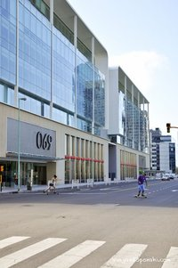
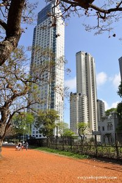
* Una tribu urbana: los otaku (o “gente que posee interés en el animé y el manga” o “fanáticos de la cultura japonesa”). Ya describí mi encuentro fortuito con ellos en el Jardín Japonés el fin de semana pasado.
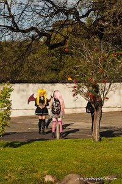
* Un día: el sábado. Salí a sacar fotos con Gabriel Greco, blogger de viaje amigo y autor del blog Destinos Actuales junto con Eddy Lara Brito. Nos encontramos en San Telmo y caminamos durante varias horas sin plan ni rumbo. Y los dos llegamos a la misma conclusión: fuimos con los ojos tan abiertos que descubrimos cosas que nunca habíamos visto a pesar de haber pasado varias veces por ahí. Encontramos rincones, arquitectura, personajes, graffitis, stencils, mercados… Y hasta nos chocamos, inesperadamente, con la Marcha del Orgullo Gay.
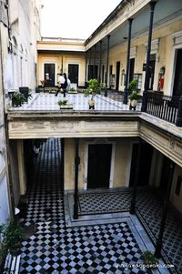
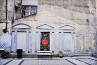
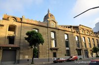
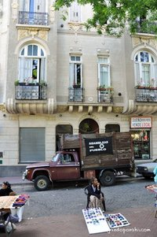
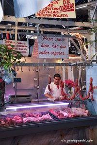
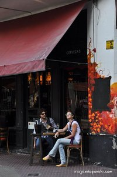
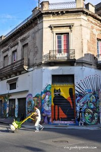
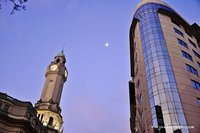
Y la Luna.
* Un lugar: Parque Lezama. Nunca había ido un fin de semana y la verdad que me sorprendió la cantidad de gente y actividades que había: bandas estilo Onda Vaga tocando en el pasto, grupos de percusión que me recordaron a un domingo en Montevideo (Uruguay), amigas tomando mate, familias caminando, abuelos y nietos jugando al fútbol, parejas en los bancos. Y de fondo, la Iglesia Ortodoxa Rusa, con esos colores tan estridentes y llamativos.
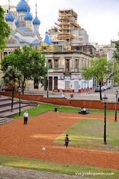
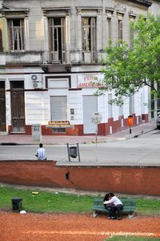
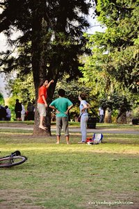
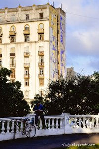
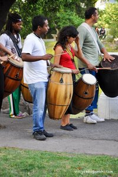
* Una persona: esta mujer. Amé su look. Creo que era Dominicana, quise sacarle fotos pero el marido nos miraba mucho, así que disimuladamente apunté mi cámara sin mirar y salió esto (con la bizarrísima cabeza del nene cortada a la mitad y el viajandoporahi.com que le quedó puesto de anteojo).
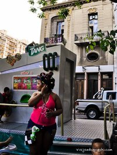
Y estas personas también me cayeron bien:
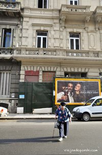

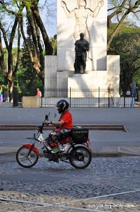
La fauna urbana de Buenos Aires es interminable, muy simpática y extremadamente fotogénica.
* La sorpresa más sorpresiva: encontrarme con el sticker de Proyecto Calco “Sorprendete” (el mismo que me inspiró a escribir este post) pegado en un escalón a la salida de la estación Juramento del Subte D. No podría haber pedido un final mejor.
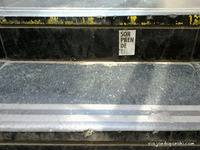
***
La Rueda de la Moraleja dice: No es necesario viajar para sorprenderse, todo depende de vos y de tu mirada. Así que abrí los ojos, ponete el switch en Modo Sorpresa y salí a caminar por tu ciudad. Mirala como si fueses turista, como si vinieses de un lugar donde todo es distinto, donde la lógica es otra, donde todo se hace al revés. Dejate llevar por tu instinto, encontrá rincones que nunca viste, observá a la gente, buscá detalles, dejá que los detalles te encuentren. Sorprendete.
Este post forma parte de Amigate con Buenos Aires, un Mini Proyecto Fotográfico de Viajando por ahí. Podés leer todos los post de esta serie haciendo click en este enlace.
Días asiáticos (en Buenos Aires)
Mon, 31 Oct 2011 03:28:53 +0000
Todo empezó cuando salí del edificio de mi mamá en la bici y, adelante mío, apareció una chica de nacionalidad indudablemente indonesia. Estaba vestida con una camisa de tela batik —típica de allá—, también estaba subida a una bici y tenía toda pero toda la cara de ser indonesia. La miré, me puse al lado [...]
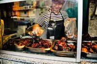
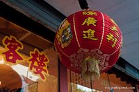
Todo empezó cuando salí del edificio de mi mamá en la bici y, adelante mío, apareció una chica de nacionalidad indudablemente indonesia. Estaba vestida con una camisa de tela batik —típica de allá—, también estaba subida a una bici y tenía toda pero toda la cara de ser indonesia. La miré, me puse al lado en la bici, quise hacer contacto visual para preguntarle si efectivamente era de allá, pero durante el microsegundo que me miró me petrifiqué y no le pregunté nada. Después se fue y no me animé a emprender una persecución por las bicisendas de Buenos Aires.
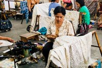Mujeres confeccionando batik en la isla de Java (Indonesia)
Me quedé pensando en lo que podría haberle dicho: “Aku cinta Indonesia” (“Amo Indonesia”) o “Kamu bisa bicara bahasa spanyol?” (¿Hablás español?). La hubiese descolocado un poco, ¿no? No creo que sea muy común que alguien la frene en pleno Buenos Aires y le hable en su idioma. Pero no me animé. Me agarró pánico escénico, estaba en shock (en realidad la que estaba descolocada era yo, que jamás imaginé encontrarme a una persona de Indonesia en el mismo edificio).
Más tarde comprobé que, efectivamente, en el edificio de mi mamá vive una familia de Indonesia, así que la próxima vez que vaya me quedaré haciendo guardia en la puerta o les tocaré el timbre haciendo de cuenta que me equivoqué de piso. ¡Me muero por conocerlos! Quiero escuchar cómo hablan español, si es que lo hablan, y con qué acento les sale; quiero saber qué piensan de la vida en Argentina, de qué parte de Indonesia son, hace cuánto que viven acá, si extrañan el sambal (la salsa picante que le ponen a todo) y el nasi padang (comida típica de una región de Sumatra). La próxima vez juro que me voy a animar.
Esa misma tarde salí a caminar por la zona de Retiro. En realidad no lo tenía planeado, pero justo andaba por ahí y tenía tiempo, así que di una vueltita por Plaza San Martín y alrededores. Y oh sorpresa, adivinen qué pasó. Me crucé con una familia de Indonesia: sí, madre (con velo y todo), padre (con el gorrito típico) e hijo. Miré para atrás para comprobar que no hubiese cámaras siguiéndome y todo aquello no fuese un reality show, pero no, eran reales y pasaron caminando al lado mío. Probablemente siempre estuvieron en la ciudad, pero tuve que ir hasta Asia y volver para reconocerlos.
El sábado salí a pasear por la ciudad con mi familia. No teníamos ningún plan y se me ocurrió, de la nada, ir un ratito al Jardín Japonés. Llegamos a eso de las cinco de la tarde y había bastante gente; al principio pensé que era “porque era sábado”, pero cuando vi que la mayoría de las personas estaban disfrazadas empecé a sospechar, y cuando me di cuenta de que eran disfraces de personajes de animé japonés… no lo pude creer. Habíamos caído en una jornada de manga y animé que se hace cada tres meses en el Jardín Japonés (y durante el resto del tiempo en otros lugares). Así que fue un momento ideal para sacar fotos.


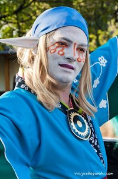
A las seis, cuando el Jardín cerró, pensé en voz alta: “Hace mucho que no voy al Barrio Chino”, y mi mamá, emocionada, me respondió que fuéramos para allá porque ella también quería verlo. Así que un rato más tarde estábamos pasando bajo el arco que marca la entrada al Chinatown porteño. Caminamos entre mercaditos, vimos lámparas rojas y vendedores de snacks chinos argentinizados, y por un rato sentí que estaba de vuelta en Asia.
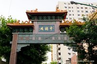
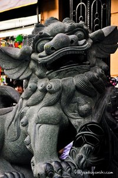
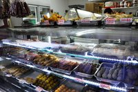
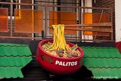
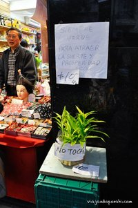
Y mis días asiáticos terminaron hoy, hace unas horas, cuando visité la mezquita de Palermo, una de las más grandes e importantes de Sudamérica. Todavía no entré, lo tengo pendiente junto con el stalking a la familia indonesia del edificio.
Todos estos encuentros fortuitos con la cultura asiática en Buenos Aires me hacen pensar en que siempre hubo pedacitos de aquel continente en esta ciudad, pedacitos que van más allá de “los supermercados chinos”, “las tintorerías japonesas” o “el sushi”, pero que recién pude descubrirlos después de haber viajado por Asia y de haber adquirido algo así como el radar o la mirada asiática.
Este post forma parte de Amigate con Buenos Aires, un Mini Proyecto Fotográfico de Viajando por ahí. Podés leer todos los post de esta serie haciendo click en este enlace.
Arte, mate y plantas carnívoras
Sun, 23 Oct 2011 03:04:15 +0000
Como les conté en el post anterior, decidí empezar un mini proyecto fotográfico llamado “Amigate con Buenos Aires” para documentar mi reconciliación con Buenos Aires. Todo surgió por una calcomanía que pegué en mi espejo y una sensación de que la ciudad volvió a cautivarme como en sus mejores épocas. Quiero aclararles algo para aquellos que no [...]
Como les conté en el post anterior, decidí empezar un mini proyecto fotográfico llamado “Amigate con Buenos Aires” para documentar mi reconciliación con Buenos Aires. Todo surgió por una calcomanía que pegué en mi espejo y una sensación de que la ciudad volvió a cautivarme como en sus mejores épocas. Quiero aclararles algo para aquellos que no me conocen: No odio Buenos Aires. Tampoco la amo. O tal vez sí. Es una relación amor-odio, y ojalá dure toda mi vida, porque mientras sienta eso seguiré viajando y seguiré volviendo.
Cuando me planteé esta serie de posts pensé en dedicar uno a cada barrio, pero ahora, mientras miro las fotos que saqué en estos días, me doy cuenta de lo difícil que es abarcar un barrio completo en una sola caminata. Además, tampoco creo que me dé el tiempo para visitarlos todos. Y ya veo que si en el post de San Telmo hablo de Carlos Calvo van a aparecer los defensores de Humberto Primo, y si en Palermo voy a el Parque Las Heras y no al Planetario, se pudre todo, y si encima voy a Villa Crespo y no a Almagro, chau, me echan de la ciudad a patadas. Así que decidí darle una óptica distinta, más personal, porque al fin y al cabo no estoy haciendo un relevamiento barrial sino que estoy paseando por la ciudad y disfrutando de caminar sin rumbo.
Lo que me interesa es buscar momentos, encontrar detalles, compartir pedacitos de la ciudad con alguien y apropiarme de otros sola. Sé que esta ciudad tiene un significado distinto para cada uno de sus habitantes, así que lo quiero hacer es encontrar el mío y mostrárselos a través de imágenes. Quiero descubrir qué veo y qué no veo de Buenos Aires. Lo bueno de este proyecto, además, es que lo seguiré completando cada vez que vuelva de un viaje.
Los primeros días que estuve acá me dediqué a sacar fotos con el celular. En realidad, no salí específicamente a sacar fotos, sino que salí a caminar con un fin determinado (ir a equis lugar) y me colgué sacando fotos con el celular. Las fotos que se vienen ahora son de uno de los “circuitos” que más repetí, y cada una de estas imágenes surgió por algo que me llamó la atención. Todas son sacadas con celular (un Nokia por si se lo preguntan) y no forman parte del proyecto en sí, sino que las saqué antes por diversión.
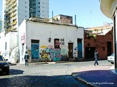
Esta casa siempre me gustó, está casi escondida entre los edificios del fondo y en venta hace varios años. Ojalá que el que la compre la mantenga así, con el arte en las paredes y esas flores que le salen del techo. Pero que no la derrumben para hacer un edificio, prométanme.
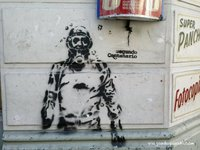Stencils y superpanchos en un quiosco del barrio.
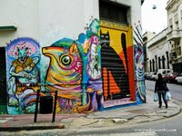
Esta es una de mis esquinas preferidas de San Telmo.
Y estos son detalles que descubro cada vez que camino por esa cuadra.
Como verán, uno de los grandes temas de mis fotos es el arte callejero. Creo que si tuviese el talento suficiente, me dedicaría a pintar paredes de colores y embellecer todas las ciudades del mundo.
Uno de esos cafecitos icónicos de Buenos Aires.

¿Alguien quiere mate?
“Creer es crear”

Y mis preferidas:
En alguna de esas caminatas me subí a un colectivo y me encontré con esta combinación de colores.
Casi no saco esta foto. Iba caminando, leí el cartel de pasada y la inercia me hizo seguir caminando. Unos pasos más adelante frené, volví y saqué la foto. Había un señor empujando un carrito con cajas y cuando vio lo que hizo, me imitó: frenó, volvió hacia atrás y leyó el cartel, probablemente con curiosidad de saber qué fue lo que me había llamado tanto la atención.
Este post forma parte de Amigate con Buenos Aires, un Mini Proyecto Fotográfico de Viajando por ahí. Podés leer todos los post de esta serie haciendo click en este enlace.
#TBMbue: El primer encuentro de bloggers de viaje de Argentina
Mon, 17 Oct 2011 05:36:16 +0000
Los bloggers tenemos la suerte de poder trabajar desde cualquier lugar del mundo (o desde cualquier lugar con conexión a internet). También tenemos la suerte de poder conectarnos con otros bloggers y conversar virtualmente a través de Facebook, Twitter, LinkedIn, Google+ y todas esas redes sociales que tanto usamos (y amamos/odiamos). Además, si nos dedicamos [...]
Los bloggers tenemos la suerte de poder trabajar desde cualquier lugar del mundo (o desde cualquier lugar con conexión a internet). También tenemos la suerte de poder conectarnos con otros bloggers y conversar virtualmente a través de Facebook, Twitter, LinkedIn, Google+ y todas esas redes sociales que tanto usamos (y amamos/odiamos). Además, si nos dedicamos a escribir sobre viajes, tenemos la suerte de viajar y de no estar siempre en el mismo lugar. Lo malo de todo esto es que terminamos convirtiéndonos en el nombre de nuestro blog o en nuestro nombre de Twitter y la relación con otros bloggers (casi) siempre es virtual. Es muy común que escribamos posts invitados para otros blogs, que nos dejemos comentarios, que compartamos por Facebook o Twitter lo que escribió otro, que nos citemos… sin habernos visto en persona jamás.
Por suerte, a Eddy Lara Brito y María Victoria Rodríguez se les ocurrió fundar el TBM o Travel Bloggers Meeting para reunir periodicamente a todos los bloggers de viaje en persona y poder discutir los temas más relevantes de nuestra profesión. Sí: profesión. Ya se realizaron varias reuniones en distintas ciudades de España y el sábado pasado tuvo lugar el TBM Buenos Aires, el primer encuentro de bloggers de viaje de Argentina.
La sede fue la Universidad de Palermo, y el evento se realizó dentro del marco del Travel Camp, una jornada abierta en la que participó gente de turismo, tecnología e internet. Estuvo sponsoreado por Doppler, RealSoftSolutions, Groupon, Amadeus y la Universidad de Palermo y la organización estuvo a cargo de Avantrip, Blog de Viajes, Explorarlo y Glidea.
El Travel Camp empezó a eso de las 10.30 am y tuvo 12 presentaciones distribuidas en distintas aulas. En el segmento de Phocus Wright se analizaron los mercados online de la industria turística; Jorge Gobbi habló acerca de la transformación de las etapas del viaje, de las redes sociales y las nuevas guías de viaje; las chicas de Viajeros.com explicaron cómo funciona y en qué consiste la red social de viajeros de habla hispana con mayor cantidad de usuarios del mundo; y los chicos de LaPlataGO contaron cómo fue la experiencia de organizar y realizar el primer BlogTrip de Argentina en la ciudad de La Plata. (Para quienes no conocen el término, el Blog Trip es un viaje organizado por un empresa/hotel/ente turístico/sitio web al que se invita a un grupo de bloggers para mostrarles un destino. Si bien puede parecer una versión moderna del Press Trip, es una modalidad nueva que se diferencia —o por lo menos debería— del viaje de prensa tradicional.)
A las 2 pm nos fuimos todos a la terraza a comer pizza y compartir unas cervezas y a eso de las 3 empezó el evento tan esperado: el Travel Bloggers Meeting Buenos Aires. Nos pusimos en comunicación directa con Eddy Lara Brito y María Victoria Rodríguez (los fundadores del evento) vía Skype desde España y arrancamos con la Mesa 1: Nuevas formas de contar historias de viajes en Internet, en la que participé junto con Carolina Reymúndez y Nicolás Pasiecznik.
La foto fue tomada por Elisa (elisaserendipity.blogspot.com)
Carolina y Nicolás son periodistas de viaje con una gran trayectoria, y ambos publican tanto en prensa tradicional como en sus blogs. Carolina habló acerca de los distintos recursos que utiliza para describir una ciudad o país, y resaltó el uso de la anécdota y de las historias de vida de la gente local. Nicolás, además, es corresponsal de guerra y nos contó, entre otras cosas, acerca de su viaje a Egipto en plena caída de Mubarak y de la importancia de utilizar fotos a la hora de relatar un evento. Yo hablé acerca de cómo cambió la relación entre el blogger y el lector entre el 2008 (cuando escribí mi primer blog de viajes) y hoy, y terminé contando anécdotas de cuando me perdí en China y cuando conocí a un cantante de Heavy Metal en un avión en Malasia, entre otras.
La foto fue tomada por Elisa (elisaserendipity.blogspot.com)
La Mesa 2 trató acerca de blogs, monetización, marketing y blogtrips y estuvo a cargo de Jorge Gobbi, Mario Alza y Santiago Cravero. Se habló de los blogtrips, de los cambios de Google con la llegada de “Panda” (el nuevo algoritmo de búsqueda) y de los cambios que están sufriendo los blogs de viajes a causa de las redes sociales. Y una de las frases de Jorge que me quedó grabada del evento a modo de conclusión es que los blogs deben ser utilizados o vistos como una herramienta de posicionamiento profesional y no tanto como algo con lo que nos haremos millonarios ni mucho menos. El blog es nuestra tarjeta de presentación, una pequeña muestra de lo que podemos hacer y aportar en el rubro de los viajes y el turismo.
Fue un día muy positivo ya que por fin pudimos vernos las caras y charlar acerca de los temas que nos interesan. Por mi parte, me hace sentir que no estoy sola en esto y me refuerza la idea de que los bloggers de viajes tenemos que complementarnos, cada cual desde su nicho, y ofrecer información de calidad basada en la experiencia.
¡Ojalá sea la primera reunión de muchas más! Gracias Gabriel Greco y Diego Amoros por invitarme y fue un gusto conocerlos a todos.
Estaría bueno empezar a formar una base de datos de bloggers de viaje de América latina, así que quienes quieran pueden dejar su contacto en los comentarios o mandarme sus datos vía mensaje privado así voy armando una lista.
Novedades: “Asia en mi mochila” y expo de fotos
Sun, 02 Oct 2011 14:23:09 +0000
Quería contarles que hoy salió la primera nota —de una serie de cuatro— con relatos de mi viaje por Asia en la Revista de La Nación. La serie se llama Asia en mi mochila y la nota de hoy es “China sin palabras”. Ahí cuento, con texto y fotos, cómo hice para viajar por China [...]
Quería contarles que hoy salió la primera nota —de una serie de cuatro— con relatos de mi viaje por Asia en la Revista de La Nación.
La serie se llama Asia en mi mochila y la nota de hoy es “China sin palabras”. Ahí cuento, con texto y fotos, cómo hice para viajar por China sin entender el idioma y cómo encontré otros lenguajes para comunicarme en los que no eran necesarias las palabras. Ojalá les guste. Si no tienen acceso a la Revista, pueden leer la nota acá: China sin palabras
Y la segunda novedad es que voy a hacer una muestra de fotos de viaje en la Facultad de Comunicación de la Universidad Austral. Toda la información está en este flyer.
¡Feliz domingo para todos!
PD: ¡Todavía pueden votar en los premios Bitácoras.com! Si les gusta VPA, pueden nominarlo como Mejor Blog de Viajes.
Estos son los pasos:
1. Ingresar a http://bitacoras.com/premios11/votar
2. Ingresar al sistema con su usuario (si es que ya lo tienen) o registrarse con su email o usuario de Facebook
3. Volver a http://bitacoras.com/premios11/votar y nominar a http://viajandoporahi.com en “Mejor Blog de Viajes”
¡Gracias! ¡Vamos que estamos en los top 10!
Perdidas en el desierto
Sun, 25 Sep 2011 15:00:42 +0000
“No puedo creer que me hayas convencido de hacer esto”, me dice Mirla mientras subimos con muchísimo esfuerzo una de las dunas de arena que envuelven al oasis de Huacachina. “Ya falta poco”, le respondo, intentando consolar tanto a ella como a mí. Pero no falta poco. Cada vez que frenamos para recuperar la respiración, [...]
“No puedo creer que me hayas convencido de hacer esto”, me dice Mirla mientras subimos con muchísimo esfuerzo una de las dunas de arena que envuelven al oasis de Huacachina. “Ya falta poco”, le respondo, intentando consolar tanto a ella como a mí. Pero no falta poco. Cada vez que frenamos para recuperar la respiración, cuento las huellas que dejamos en la arena: como mucho, habremos dado siete pasos. Seguimos subiendo. Los pies se me hunden hasta los tobillos a cada paso, el corazón me late aceleradísimo y siento que los músculos de mis piernas van a explotar. No es nada fácil caminar por la arena, mucho menos si esa arena pertenece a una duna, mucho menos si esa duna forma parte de un desierto (y mucho menos si no tenés un buen estado físico). Caminamos diez pasos y frenamos, caminamos otros diez pasos y frenamos otra vez. Miro hacia arriba y me da envidia ver que hay gente que ya está sentada en la cima de la montaña de arena, lista para contemplar el atardecer sobre el desierto. Falta poco, sólo un tramo más. Lo hago corriendo, no quiero darle tiempo de descanso a mis piernas, no quiero ni pensar en que estoy cansada. Finalmente llegamos y me tiro boca arriba en la arena.
Recupero de a poco la respiración y miro hacia todos lados. Desde ahí podemos ver la ciudad de Ica de un lado y el oasis de Huacachina del otro. Hay personas haciendo sandboard en la duna de enfrente, algunos buggys dando vueltas por ahí, parejas sentadas en la arena y gente que sigue subiendo. Pasa uno que va empujando su bicicleta, cruza frente nuestro y sigue hacia otra duna más alta; más tarde lo vemos bajar: hace todo el camino de vuelta en su bici a toda velocidad, con las ruedas semihundidas en la arena, como si estuviese bajando por una enorme ladera de manteca. Todos son como hormiguitas en un inmenso desierto de arena. “Desde esa duna de arriba se ve mejor, ¿seguimos subiendo?”, pregunta una de las dos. “No, ya está, quedémonos acá”, responde la otra.
Mientras miramos el desierto le cuento a Mirla que una vez, cuatro amigas y yo nos perdimos en ese mismo lugar. Fue en el 2008, cuando Huacachina era un lugar… cómo definirlo… más vacío. Alguien nos había contado que existía otro oasis, más chiquito que Huacachina, que era totalmente virgen e inhabitado. Solamente tenía una laguna y árboles con frutas exóticas. Quisimos ir a conocerlo. Nos paramos en la esquina donde salían los buggys y le pedimos a un conductor que nos dejara lo más cerca posible de ese oasis. Nos acercó hasta un lugar, nos dijo que teníamos que cruzar una duna y que el oasis iba a estar del otro lado, y se fue. Nos había llevado de onda, sin pedirnos ni un sol a cambio, pero tenía que seguir con su tour. Quedamos solas en medio de la nada. No se veía Ica ni Huacachina, solamente dunas por todos lados. Empezamos a caminar, logramos cruzar la duna que nos había señalado el conductor y nos encontramos con… más dunas. No había ningún oasis a la vista. Nos empezamos a preocupar. ¿Cómo íbamos a salir de ahí? Estábamos literalmente en medio del desierto, sin agua, sin comida, sin abrigo. Si se venía la noche, chau.
Caminamos durante un rato más —ni recuerdo cuánto, en el desierto se pierde la noción del tiempo— y seguíamos en medio de la nada. Una de mis amigas se puso a llorar de la desesperación. Vimos que un buggy se acercaba a lo lejos y le hicimos señas para que frenara. Tenía capacidad para cuatro personas y tres de sus asientos estaban ocupados. Le pedimos al conductor que por favor nos acercara a Huacachina o a Ica. “Bueno, las llevo pero son 30 soles cada una” (algo así como 10 dólares por persona). Y nos salió de adentro: “¡Ah no! ¡30 soles ni en pedo!”. Estábamos perdidas en medio del desierto pero igual íbamos a regatear nuestro rescate. Finalmente nos llevó y no recuerdo cuánto pagamos, pero 30 soles seguro que no. Nos dejó en una de las dunas que rodea a Huacachina y, como estábamos agotadas por aquella aventura, nos quedamos las cinco acostadas en la arena durante por lo menos una hora. Una de las chicas dijo: “Lo único que falta para que este día sea aún más irreal, es que haya fuegos artificiales”. Claro, fuegos artificiales en medio del desierto.
Nos quedamos dormidas, ya era de noche pero no hacía tanto frío. De repente escuchamos un “PUM” que venía de lejos. Yo pensé que alguien había disparado un arma. Escucho que una de mis amigas dice: “¡No lo puedo creer! ¡Miren, miren!”. Miramos hacia arriba y sí: fuegos artificiales de todos los colores envolvían el oasis. Más tarde nos enteramos de que venían de una feria regional que se estaba realizando en Ica, la ciudad cercana a Huacachina. Fue un día totalmente surrealista.
Termino de contarle la historia a Mirla y le digo que esta vez Huacachina me decepcionó un poco. El lugar es mucho más turístico que antes, todo está más caro, van todos de levante. No me gusta, siento que perdió la magia, que ya no es un lugar oculto.
Como ya empieza a refrescar, volvemos hacia el oasis. El camino de vuelta es rapidísimo, bajamos corriendo, dando saltos enormes. La arena es blandita, no ofrece resistencia y no lastima. Siento que estoy caminando sobre nubes, en mi cabeza suena el tema “Walking on the moon” de The Police. Pienso en que las dunas cambiaron de forma, ya no son las mismas del 2008. Y me doy cuenta de que después de haber vivido “Aquel Día” en el desierto, ya no hay nada de Huacachina que pueda sorprenderme.
Les dejo algunos precios por si visitan Huacachina:
- Cambio: un dólar equivale aprox. a 2.70 soles (septiembre 2011).
- Hostel: 15 soles la noche en dormitorio compartido.
- Menúes de almuerzo y cena: desde 10/15 soles (incluye una entrada, un plato principal y una bebida).
- Tour en buggy: entre 30 y 40 soles (no lo hice esta vez pero esos fueron los precios que escuché, probablemente se pueda regatear).
- Bus a Lima: 22 soles (4 horas)
- Subir a las dunas y ver el atardecer sobre el desierto, es gratis. Y perderse en el desierto, no tiene precio.
Viajar en taxi / Viajar en sofá
Sun, 20 Nov 2011 19:16:05 +0000
Falta poco para irme y Buenos Aires se pone cada vez más linda, cada vez más violeta, cada vez con un clima más agradable. Y yo me voy al frío. Uf, eso es lo único que me puede llegar a desanimar: no tolero mucho el frío y no quiero ir muy cargada de camperas, pero [...]
Falta poco para irme y Buenos Aires se pone cada vez más linda, cada vez más violeta, cada vez con un clima más agradable. Y yo me voy al frío. Uf, eso es lo único que me puede llegar a desanimar: no tolero mucho el frío y no quiero ir muy cargada de camperas, pero no queda otra. Mientras tanto, me sigo amigando con Buenos Aires, cada vez con más velocidad, sabiendo que dentro de poco me voy y que no nos veremos por un largo tiempo. Ella sabe. Buenos Aires sabe cómo hacer que la odie y cómo hacer que, en el fondo, la quiera. Sabe sacarme de quicio y sabe generarme ese sentimiento de “un poco la voy a extrañar”.
Y mientras estoy en esta ciudad, me vuelven a surgir esas preguntas recurrentes que me hago cada vez que conozco un lugar nuevo. ¿Qué es lo que hace que una ciudad/pueblo sea como es? ¿Qué es lo que le da personalidad? ¿Es la gente que la habita? ¿o acaso es la misma ciudad/pueblo la que hace que la gente sea de determinada manera? ¿Quién moldea a quién? ¿Existe el determinismo geográfico? ¿La geografía tiene el poder de definir a los grupos humanos?
Y en Buenos Aires, además de preguntarme cosas, aprendí que hay muchas formas de viajar sin viajar.
Una, es por medio de Couchsurfing. Hace un tiempo empecé a alojar viajeros en casa. Estoy devolviendo, de a poco, todo lo que la gente hizo por mí en Asia y en América latina; estoy trayendo un pedacito de otro país a mi sillón. Mis primeras huéspedes fueron Sam y Kayla, dos chicas de Estados Unidos. Con ellas descubrí que en mi casa abunda el color naranja y redescubrí la movida cultural porteña. Mi segundo huésped fue Richard, un londinense con el que me reí a más no poder por los malentendidos culturales que se pueden generar entre un ciclista excéntrico y un extranjero inocente en la inauguración de un libro (mejor ni pregunten…). Cosas que pasan. Mis nuevos huéspedes son Olivier y Libby, un peruano y una estadounidense con quienes descubrí que el mundo es muy chico: nos dimos cuenta de que ya nos conocíamos de antes, caminamos juntos por el cerro Pastoruri en Perú, en septiembre de este año. Y ahora están en mi casa.
Cada persona que se queda en mi sillón me hace conocer lugares a los que nunca viajé o me hace recordar rasgos de países que amo.
Sam y Kayla en la Facultad de Derecho
Y otra forma de viajar es subiéndose a un taxi (no estoy haciendo un chiste malo. Lean.) Si hay algo que intento no hacer en Buenos Aires es tomarme taxis. Me parece un gasto innecesario. Pero hoy (sábado a la noche) fue de fuerza mayor: tengo una tendinitis en el pie derecho (divertidísimo) y no puedo caminar mucho, así que me subí a uno para volver a casa. El diálogo entre el taxista y yo fue tan bueno que los 20 pesos valieron la pena. Creo que tendría que haberle pagado más por los derechos de autor de sus historias.
Empezamos hablando de que la hija de Cristina vivía por la zona (él me contó, yo no tenía ni idea). Estábamos por Recoleta. Después derivó en que durante el gobierno de “Mendez”, el señor taxista quebró, perdió todo y ya no puede tener propiedades a su nombre. Y la conversación siguió así:
—No me queda otra: o soy taxista o me hago travesti. Pero lo que más duele de ser travesti es caminar con taco aguja, yo soy muy gordo y pierdo el equilibrio, viste.
Risas.
Prosigue:
—Los taxistas están todos chapa. Yo me miro al espejo todos los días y pienso “qué locos que están los taxistas”. Mirá, nunca te cases ni con un taxista, ni con un colectivero, ni con un camionero. Son tres gremios de gente loca. ¿Vos qué estudiás?
—Ya terminé… Estudié Comunicación Social.
—Uhhh, otros que están re locos. El otro día llevé a cuatro chicas, todas estudiaban Comunicación, eran unas locas lindas, parece que era el cumpleaños de una… ¿Y si estudiás Comunicación de qué podés trabajar? ¿Con qué tiene que ver la comunicación?
—Y… podés dedicarte al periodismo, al marketing, a la publicidad… Yo me dedico a escribir.
—Uhh, entonces tenés que venir a pedirme historias a mí. Vos no sabés las cosas que yo escucho acá, a veces estoy tentado de grabar a la gente, de poner un micrófono y una cámara… Después sabés qué, llevo todo eso a un medio y me hago millonario. Vos no sabés las cosas que escucho… Cada pasajero que sube viene con su situación, con su vida y me trae todo eso al asiento de atrás. Vos no sabés qué se puede subir a tu auto. Y yo escucho todo, viste, y a veces no lo puedo creer.
—¿Qué cosas escucha, por ejemplo?
—Una vez estaba por Belgrano y se subió un tipo joven, muy bien vestido, de traje, y yo le pregunté a qué se dedicaba. Para qué. A veces tendría que cerrar la boca. ¿Sabés lo que me respondió? Que era asesino, que mataba gente por encargo. Al principio pensé que era un loco y le seguí la corriente. Parece que trabajaba para un médico. Le pregunté si había matado a muchos y me dijo que no, que solamente a ocho. Me contó que le pagan según la persona y que el trabajo más barato que hizo fue de 20 mil dólares. Me dijo que si algún día necesitaba algo lo llamara. ¿Y sabés cómo me convenció de que la historia era verdad? Antes de bajarse me mostró la pistola que llevaba escondida en el traje. Cosas así me pasan. ¿Te dejo por acá?
—Sí, atrás de este auto está bien.
—Bueno, te espero a que entres y me voy.
—Gracias, que tenga buenas noches y siga recolectando historias.
Les juro que casi le doy mi mail para que me mandara más relatos.
Entré a mi casa, me senté en la computadora y, a las 4 de la mañana, transcribí esta conversación y me di cuenta de que a veces no hace falta más que subirse a un taxi u ofrecer un espacio en un sillón para sumergirse, aunque sea por un rato, en otra realidad. Y cosas así pueden pasarme en todo el mundo. Pero esta vez me pasaron en Buenos Aires.
En su bici pone “El linyera”
En la Reserva Ecológica
¿Alguien perdió una carita feliz?
Este post forma parte de Amigate con Buenos Aires, un Mini Proyecto Fotográfico de Viajando por ahí. Podés leer todos los post de esta serie haciendo click en este enlace.
Palermo Arte (o Cosas que extraño cuando no estoy acá)
Fri, 11 Nov 2011 21:59:50 +0000
Si pudiera elegir un lugar de Buenos Aires donde vivir, sería una casita en algún pasaje de Palermo Viejo. Tendría que ser una casa vieja, con muchas flores en la ventana y con paredes disponibles para intervenirlas. Que sea una Casa Graffiti, un lugar donde pueda convocar a todos los artistas callejeros y decirles: Tomen [...]
Si pudiera elegir un lugar de Buenos Aires donde vivir, sería una casita en algún pasaje de Palermo Viejo. Tendría que ser una casa vieja, con muchas flores en la ventana y con paredes disponibles para intervenirlas. Que sea una Casa Graffiti, un lugar donde pueda convocar a todos los artistas callejeros y decirles: Tomen la pintura, hagan lo que quieran, pónganle color a mis paredes. Y si quieren, organicen recitales, muestras de fotos, movidas musicales. Que sea una Casa del Arte.
El arte callejero es una de las expresiones que más me gustan: es un arte desinteresado, un arte con el único fin de ser arte, un arte que da color hasta a la ciudad más gris, un arte que expresa la voz de la gente joven, un arte que habla, que grita, que estalla a través de la pintura, un arte que es de todos y de nadie, un arte que no busca quedar bien con nadie, un arte efímero. Por eso siempre me sentí tan bien en Yogyakarta (la ciudad donde viví en Indonesia), porque cada vez que salía por la ciudad y veía los mensajes pintados en las paredes sentía que había una movida joven, que la gente no estaba dormida sino que pensaba, opinaba y se expresaba a través del color. Allá en Asia también encontré arte callejero.
Hace unos días encontré uno de los cuadernos que escribí durante mi viaje por América latina (2008) y uno de los textos contenía la siguiente lista:
- Las cuatro estaciones, ver cómo las hojas van cambiando de color, caen de los árboles, cubren las veredas y hacen ruidito cuando las piso.
- El cielo azul y despejado [se ve que andaba por lugares medio grises]
- Salir un domingo a pasear por la ciudad y que todo esté abierto [visité pueblos y ciudades donde los domingos no sale ni el perro].
- Sentarme en un café con mesitas en la vereda y leer.
- Viajar en bondi.
- Sentarme en Plaza Francia un domingo y escuchar a la banda que esté tocando.
- Saber que todas las noches hay algún evento cultural en algún lugar de la ciudad.
- Las movidas artísticas, las inauguraciones, las muestras de fotos, las bandas que tocan en los bares, los shows homenaje a algún artista, los recitales al aire libre.
- Los centros culturales.
-
El arte callejero.
El título era Cosas que extraño de Buenos Aires.
En resumen: hojitas de otoño, arte en las paredes, posibilidad de escuchar música en vivo en cualquier lugar y a toda hora. Esa es mi respuesta a la pregunta que siempre me hacen, esas son las cosas que muchas veces me hacen falta cuando estoy afuera. Son cosas que ocurren en todos los barrios, pero que para mí siempre fueron sinónimo de Palermo, tal vez porque, como les dije, crecí y me moví por ahí durante muchos años. Así que mi post de hoy es un homenaje a los colores de Palermo, con pocas palabras pero muchas imágenes.
Ah, ¡ya tengo próximo destino! Vuelo el 24 de noviembre. ¿A dónde? Les cuento en el próximo post. 
Pueden ver el resto de las fotos de Palermo Viejo en esta galería:
Este post forma parte de Amigate con Buenos Aires, un Mini Proyecto Fotográfico de Viajando por ahí. Podés leer todos los post de esta serie haciendo click en este enlace.
Ciudad repleta / Ciudad abandonada
Thu, 03 Nov 2011 16:45:00 +0000
Son casi las 12 de la noche de un miércoles. El 126 avanza por Alem y yo miro Microcentro desde la ventana. No hay ni un fantasma. Si no conociera Buenos Aires pensaría que el colectivo se equivocó de ruta y se perdió entre las ruinas de una ciudad abandonada. Los edificios están cerrados y [...]
Son casi las 12 de la noche de un miércoles. El 126 avanza por Alem y yo miro Microcentro desde la ventana. No hay ni un fantasma. Si no conociera Buenos Aires pensaría que el colectivo se equivocó de ruta y se perdió entre las ruinas de una ciudad abandonada. Los edificios están cerrados y sin luz, los papeles y volantes que cubren el piso indican que, pocas horas antes, en esas calles hubo gente. Pero a medianoche ya no quedan autos, bicicletas ni peatones. Los pocos colectivos que circulan por ahí avanzan rápido: el asfalto les pertenece. A esa hora no hace falta tocar bocina ni estresarse.
El 126 se mete por una calle angosta. Nunca me di cuenta de lo estrechas que son algunas calles de Buenos Aires, siento que si sacara un brazo por la ventana, podría rozar la fachada de los edificios con mis dedos. Y ahora que todo está vacío, esa cercanía entre las construcciones se nota mucho más. El colectivo parece ir dentro de un túnel formado por balcones. ¿Cómo es posible que esta zona que para los porteños es sinónimo de “caos” —o para decirlo en argentino: de quilombo— durante el día sea tan silenciosa durante la noche? Pensar que hacía unas horas había estado caminando por ahí con mi cámara, esquivando gente, motos y palomas…
Si bien Microcentro no es oficialmente un barrio, sino el downtown de la ciudad, es una zona polémica: no creo que haya nadie “indiferente” a Microcentro, seguramente lo aman o lo odian. Lo cierto es que nadie que viva en Buenos Aires escapa de pisar esta zona, aunque sea una vez al día/al mes/en la vida. Algunos trabajan ahí —hay cifras que aseguran que cada día, en las oficinas, puestos, restaurantes, negocios y calles de Microcentro trabajan más de 4 millones de personas—, otros van a hacer trámites, a manifestarse, a reunirse, a almorzar, a dormir la siesta en algún banquito, hay quienes van de shopping o simplemente pasan por ahí para ir hacia otro lado.
En mi caso, crucé Microcentro todos los días durante cuatro años para llegar a la facultad. Lo odié a la mañana por su tráfico lento y estancado. Lo quise un poco más al mediodía y a la tarde, por su energía. Y ahora diría que casi lo amo los fines de semana, cuando salgo con mi bici y no pasa ni auto. Es una zona que tal vez sea difícil de querer, pero a mí me gusta por sus construcciones antiguas y su coro de conversaciones. La calle Florida concentra lo típicamente porteño y lo vende a gritos: “Parrilla libre, no se cobra cubierto, parrilla parrilla…”, “Show de tango exclusivo, shoooow…”, “Excursiones por La Boca”, “Cambiooo, cambiooo”.
Microcentro es una zona que me abruma y me revitaliza: esa masa de gente que va de un lado a otro por momentos me agobia y por momentos me hace sentir con energía. Y al ver la zona de noche, tan vacía, me doy cuenta de que lo que le otorga personalidad son todas y cada una de las personas que pasan todos los días por ahí.
Este post forma parte de Amigate con Buenos Aires, un Mini Proyecto Fotográfico de Viajando por ahí. Podés leer todos los post de esta serie haciendo click en este enlace.
Memorias de La Boca
Tue, 25 Oct 2011 12:05:34 +0000
No tengo muchos recuerdos de La Boca. Bah, en realidad tengo uno, pero intenté olvidarlo con tanta fuerza que quedó oculto en algún rincón de mi cabeza, y apenas escribí la primera frase de este post, reapareció. Fue a fines del 2007, creo, no me acuerdo y no quiero chequear. Después de escucharlo incansablemente durante [...]
No tengo muchos recuerdos de La Boca.
Bah, en realidad tengo uno, pero intenté olvidarlo con tanta fuerza que quedó oculto en algún rincón de mi cabeza, y apenas escribí la primera frase de este post, reapareció. Fue a fines del 2007, creo, no me acuerdo y no quiero chequear. Después de escucharlo incansablemente durante más de seis años, por fin iba a ver a Joaquín Sabina en vivo en Buenos Aires. Ustedes no saben cómo esperé ese recital. Acá en Argentina el cantautor español es muy querido y yo soy fanática desde los 15 años. La sede iba a ser la cancha de Boca —también conocida como La Bombonera— ubicada en el barrio del mismo nombre. Iba a dar dos funciones y yo tenía comprada mi entrada para la primera hacía meses.
El gran día fui con mi amiga Belu. En el 64, todos los pasajeros nos hicimos amigos cantando canciones de Sabina. O tal vez no. Pero mi memoria nostálgica me dice que en aquel trayecto pasó algo así. Ese día hacía muchísimo calor. Tanto, que dentro del estadio los de primeros auxilios estaban con mangueras tirándole agua al público, para que nadie se deshidratara ni se desmayara. Después de varias horas de espera se hizo de noche y empezó el show. No sé cuántos temas pudo tocar antes de que empezara la lluvia. Solo sé que no fueron suficientes. El calor sofocante de la tarde había anunciado lo peor, y lo peor se cumplió: diluvió. Llovió tanto que las pantallas estuvieron a punto de salir volando y los reflectores cayeron en picada sobre el escenario. Cayó tanta agua que Sabina tuvo que suspender el show, ya que los músicos corrían peligro. Diluvió de tal manera que la cancha de Boca y los alrededores se inundaron. El agua nos llegaba por arriba de las rodillas, o tal vez más. Si quisiera exagerar, podría decir que no salimos del estadio caminando sino nadando. Durante horas fue imposible tomar un colectivo, imposible mover un auto. Nos quedamos ahí hasta que la zona se descongestionó y finalmente pudimos irnos.
Al día siguiente, Sabina hizo su segundo show. Según me contaron, tocó un montón de temas y hasta invitó a Fito Páez y se reconciliaron en el escenario. Sí, seguramente estuvo genial. Y yo no fui y no quiero ni ver un video de esa función. Les aviso.

Hace pocos días, volví a La Boca. Esta vez, solamente a dar una vuelta. Y cuando vi que la mayoría de las casas que están sobre Almirante Brown están elevadas, entendí por qué y me acordé. Sabina, la lluvia, la inundación, no poder verlo con Fito Páez, la tristeza, la bronca. Y ahora, mientras escribo, los recuerdos reaparecen. No sólo los de aquella noche, sino posteriores.
En el 2009 mis amigas peruanas Olga y Mirla vinieron a visitarme a Buenos Aires y las llevé, entre otros lugares, a La Boca. Hicimos el típico recorrido turístico de Caminito. Vimos los conventillos —las viviendas compartidas donde se asentaron las primeras familias de inmigrantes europeos—, los colores dispares de las casas, las parejas tangueras, el icónico café Havanna de la esquina.
Y, aquella vez, saqué una foto de un banco contra una pared, una foto que más adelante usé en mi post “Volver”, a pocos días de regresar a Buenos Aires tras 16 meses en Asia, para reflejar la tristeza que sentía a través de los colores de la foto.
Hace unos días, pasé por delante de ese mismo banco y los colores habían cambiado. Ya no eran nostálgicos ni pasteles, ahora eran saturados y alegres… como si se hubiesen adaptado a mi estado de ánimo.
Después de reencontrarme con el banco di unas vueltas por las afueras de Caminito —por el verdadero barrio de La Boca— y me di cuenta de cómo cambió mi mirada tras haber viajado por América latina y Asia. Vi, en la gente que trabajaba en las veredas, en las personas que tomaban mate con los vecinos, en las mujeres que caminaban con sus hijos por el medio de la calle, la cultura callejera asiática y el ambiente de los pueblos del Caribe o Centroamérica. Vi algo muy latino, un estar afuera, ocupar el espacio público, que me llamó la atención y me gustó mucho. No es algo que se vea en todos los barrios de la ciudad. O tal vez no es algo que yo hubiese podido ver antes… ¿será que tuve que viajar a Asia y América latina para poder mirar realmente a mi ciudad? Y les voy a contar algo: quedé tan anonadada por esa vida callejera de La Boca, que no saqué ni una foto. Solamente miré.
Y al final era mentira eso de que no tengo ningún recuerdo de La Boca. Lo que tengo es mala memoria.
Este post forma parte de Amigate con Buenos Aires, un Mini Proyecto Fotográfico de Viajando por ahí. Podés leer todos los post de esta serie haciendo click en este enlace.
Amigate con Buenos Aires – El nuevo mini proyecto de VPA
Thu, 20 Oct 2011 02:41:33 +0000
Todo empezó hace unos días, cuando preparaba una guía de viajes de Buenos Aires que me habían encargado. Me leí todo acerca de la ciudad, miré fotos, descubrí —virtualmente— rincones que no conocía, encontré muchísimos recorridos temáticos interesantísimos para hacer (“recorrido literario”, “recorrido de bares notables”, “recorrido histórico”, “recorrido cultural”, etc) y después de empaparme [...]
Todo empezó hace unos días, cuando preparaba una guía de viajes de Buenos Aires que me habían encargado. Me leí todo acerca de la ciudad, miré fotos, descubrí —virtualmente— rincones que no conocía, encontré muchísimos recorridos temáticos interesantísimos para hacer (“recorrido literario”, “recorrido de bares notables”, “recorrido histórico”, “recorrido cultural”, etc) y después de empaparme de información me dije: “Pará, pero Buenos Aires tiene mil cosas para ver. Mil cosas que ya vi mil veces, pero que quiero ver mil y una más”. Y me dieron ganas de salir en ese mismo momento con un megáfono, pararme en medio de la 9 de Julio —en el Obelisco, tal vez— y gritar: “Hola Buenos Aires, ¡volví! ¡Te quiero otra vez!”. Pero no lo hice porque no tengo megáfono y tenía que terminar de escribir la guía.
Para quienes no lo conocen, les presento al Obelisco.
Ese mismo día, además, pegué una de las calcos de Proyecto Calco en mi espejo. Cada vez que me miraba al espejo, el papelito me decía: Amigate. Y cada vez —como si fuera poco— me lo decía con un tono distinto: con indignación, con tristeza, con alegría, dándome una orden, insistiéndome, apurándome, enojada, haciéndome burla, riéndose. Y me di cuenta de que algo estaba pasando: había llegado el momento de reconciliarme con Buenos Aires —esa ciudad que amo y odio a la vez— y salir a redescubrirla, observarla y fotografiarla.
Así que me propuse un nuevo proyecto: amigarme con Buenos Aires, con sus barrios, con su belleza, con su caos, con su esplendor, con su basura, con su estrés, con su buena onda, con sus calles empedradas, con sus manifestaciones, con sus balcones, con sus esquinas ruidosas, con sus pasajes silenciosos, con su primavera, con su mal humor. Es un proyecto que me inspira y me desafía: me inspira a sorprenderme, a mirar los lugares que ya conozco, aquellos por los que pasé incontables veces, con los ojos más abiertos; me desafía a encontrar detalles, a descubrir nuevas perspectivas, a capturar íconos y momentos urbanos. Me inspira a verla como si fuera la primera vez, como si estuviese viajando por cualquier otro lugar del mundo, y me desafía a reconocerla como propia, como el lugar donde crecí y del que siempre querré irme (y volver volver volver).
Así que tras esta introducción les presento el nuevo Mini Proyecto Fotográfico (“mini”, porque como dije alguna vez, no sé en qué derivará, ni si tendrá cierre, ni cuántos capítulos durará) de Viajando por ahí: después de “Asia de la A a la Z” llega “Amigate con Buenos Aires”.
Quisiera recorrer todos los barrios de la ciudad, pero no sé si me dará el tiempo ya que en breve me vuelvo a Asia (ya daré noticias de eso), así que cubriré la mayor cantidad de lugares que pueda. Igualmente, siempre que vuelva a Buenos Aires, seguiré mirándola como si fuese la primera vez. Así que sospecho que este será un proyecto que jamás terminará del todo.
Este post forma parte de Amigate con Buenos Aires, un Mini Proyecto Fotográfico de Viajando por ahí. Podés leer todos los post de esta serie haciendo click en este enlace.
Y ya que estoy, aprovecho el espacio: ¿Me votás como Mejor Blog de Viaje en los Premios Bitacoras.com?
La votación cierra el 1 de noviembre. Es muy fácil votar:
1) Ingresá a http://bitacoras.com/premios11/votar
2) Si ya tenés un usuario, ingresá en el sistema con tu email y tu clave. Sino, creá uno utilizando tu cuenta de Facebook o Twitter.
3) Volvé a http://bitacoras.com/premios11/votar e ingresá http://viajandoporahi.com/ en la categoría “Mejor Blog de Viajes“.
¡Muchas gracias!
El cuaderno viajero
Mon, 10 Oct 2011 18:13:32 +0000
Los viajeros nos estamos volviendo techies (dícese de las personas que muestran gran interés —a veces casi obsesivo— por la tecnología). O mejor dicho, los bloggers y/o escritores de viajes nos estamos volviendo híper-tecnologizados (un término que ni siquiera sé si existe). En estos últimos años, los cuadernos y anotadores de viaje se transformaron en [...]
Los viajeros nos estamos volviendo techies (dícese de las personas que muestran gran interés —a veces casi obsesivo— por la tecnología). O mejor dicho, los bloggers y/o escritores de viajes nos estamos volviendo híper-tecnologizados (un término que ni siquiera sé si existe). En estos últimos años, los cuadernos y anotadores de viaje se transformaron en computadoras, y nuestra caligrafía, en alguna tipografía que tal vez poco tenga que ver con nuestra letra real. Los libros pasaron a ser pantallas táctiles, las brújulas se convirtieron en celulares y nuestra mirada, en cámaras de fotos. Hoy en día, el servicio principal que debe tener un hostel para rankear primero es el wi-fi más veloz y una buena cantidad de enchufes para cargar nuestros celulares, laptops y baterías. Nuestras web favoritas son las de reservas de hoteles, buscadores de vuelos, mapas y plataformas de blogs. Hoy no solamente decimos que estamos en un lugar, sino que hacemos el check-in en Facebook o lo twitteamos para que todos nuestros contactos virtuales se enteren.
En el siglo XXI, donde más que la información lo que importa es la rapidez con que se la transmite, los bloggers de viaje nos convertimos en flashpackers (o “mochileros tecnológicos”).Yo también caí en esta vorágine y la verdad es que no me queda otra: sin estas herramientas no podría estar escribiéndoles acerca de mis experiencias viajeras casi en tiempo real ni tampoco podría estar realizando una reflexión como esta frente a un público de lectores. Sin la tecnología perdería el contacto con las personas que dejo atrás, con mi familia y mis amigos de Argentina, y todo se volvería más lento. Pero tantas veces pienso que, tal vez, sin tecnología estaría mucho más en contacto conmigo misma…
Les confieso algo: en el fondo soy una nostálgica a la que le hubiese gustado nacer en la década del 40 (para vivir mis 20 en los años 60) y poder viajar sin ningún tipo de atadura tecnológica, solamente con un cuaderno y una lapicera (y una cámara de fotos también, de eso no reniego), a mi ritmo, sin estar pensando en que tengo que subir todo a mi blog (¿a mi qué?) o twittear mis pensamientos (¿tui-qué?). Por eso, aún hoy, soy fan de los libros reales (no puedo evitar cargarlos en mi mochila) y de los cuadernos de viaje.
Debo ser La Mujer de los Cuadernos por la cantidad que tengo (los de la foto son solamente algunos, aunque no todos son de viaje). Debería unirme a Cuaderneros Anónimos y decir: hola, me llamo Aniko y soy adicta a los cuadernos. Veo uno que me gusta, me enamoro y no puedo pensar en otra cosa que comprármelo, aunque eso signifique vivir a base de galletitas durante varios días y cargar con el peso de las hojas en blanco en mi mochila. El impulso de llevarme cuadernos por el mundo es más fuerte que yo. Y, sinceramente, espero que nunca aparezca la cura para esta enfermedad.

Los cuadernos son aquello que me mantienen en contacto con ese viajar más despojado de elementos tecnológicos, con el viajar “de antes”, con el viajar como algo más personal y no tan público. Un cuaderno recibe todo tipo de frases, desde la más íntima hasta la más ridícula; un cuaderno se escribe a mano y permite deducir el estado de ánimo de la persona en el momento de escritura; no es necesario prender un cuaderno, basta con abrirlo y elegir una página, tampoco es necesario Guardar Como, ya que las palabras no se borran aunque el cuaderno se cierre. En un cuaderno puedo dibujar, tachar, pegar papeles, poner colores, hacer borrones, ser prolija y desprolija. Si bien sé que para seguir cumpliendo mi rol de blogger de viajes tendré que ser, aunque sea, “semi-techie”, sé que tengo un elemento que me permite huir de toda esa vorágine de información, de tanta velocidad y tanta tecnología: mi cuaderno viajero.
Tuve mis cuadernos durante mi viaje por América latina, también tuve mis cuadernos en Asia, pero hoy quiero presentarles a uno en particular, al que me acompañó tras mi regreso a Argentina: el cuaderno post-viajero. Él no se fue conmigo, sino que me esperó acá en Buenos Aires. Cuando lo dejé, todavía no tenía una función muy definida; pero apenas llegué supe que era el indicado para hacer un álbum a mano, con fotos impresas y epígrafes escritos por mí. Hace unos días, además, lo llevé a mi exposición de fotos y lo presenté ahí, y al parecer fue un hit. Acá les dejo algunas páginas para que sigamos viajando “a la antigua”.
Me hace feliz saber que a pesar de tanta velocidad, siempre tendré la lentitud de mis cuadernos viajeros.
(hagan click en las fotos para agrandarlas)
Ya que estoy, aprovecho para hacer dos anuncios:
1. Pueden ver mi expo de fotos “Fragmentos de Asia” en la Facultad de Comunicación de la Universidad Austral (Juan de Garay 125, 3er piso, CABA, Arg) hasta el 14 de octubre entre las 10 y las 21 hs.
2. Todavía hay tiempo de votar a Viajando por ahí como Mejor Blog de Viajes en los Premios Bitácoras.com (¡vamos que ya estamos entre los Top 10!). Los pasos son los siguientes:
- Ingresá a http://bitacoras.com/premios11/votar
- Si ya tenés un usuario, ingresá en el sistema. Sino, creá uno utilizando tu cuenta de Facebook o Twitter.
- Volvé a http://bitacoras.com/premios11/votar e ingresá http://viajandoporahi.com en la categoría “Mejor Blog de Viajes“.
La votación cierra el 1 de noviembre. ¡Gracias!
Flower Power del Siglo XXI
El último viaje en las combis limeñas
Wed, 28 Sep 2011 17:37:02 +0000
Las tres semanas en Perú pasaron demasiado rápido, pienso mientras espero parada en una esquina a que pase la combi que me llevará al aeropuerto Jorge Chávez. Son las 7 de la mañana en Lima y todos se están yendo a trabajar; el tráfico, por ende, es más caótico que de costumbre. Las combis avanzan [...]
Las tres semanas en Perú pasaron demasiado rápido, pienso mientras espero parada en una esquina a que pase la combi que me llevará al aeropuerto Jorge Chávez. Son las 7 de la mañana en Lima y todos se están yendo a trabajar; el tráfico, por ende, es más caótico que de costumbre. Las combis avanzan en fila, cada cual con su cobrador anunciando, con un cartelito y un megáfono “natural” (lo tienen incorporado en el tono de voz), cuál es el recorrido que hace el vehículo: “ArequipaaatodoArequipaaa”, “AngamosAngamosAngamos”, “LaMarinaFawcettLaMarinaaa”. Hablan así, sin espacios entre palabras. Cada vez que hago contacto visual con alguno, lo interpreta como un deseo de subirme a su combi, me abre la puerta y por poco me empuja adentro. Cuantos más vayan en una combi, mejor para ellos.
Pero no me subo a la primera que pase, estoy esperando una (en realidad es un bus) que se llama “JP” y que, según me dijo mi amiga Olga, va directo al aeropuerto por 2 soles (menos de un dólar). Las combis avanzan en fila india (cada una con los gritos de su cobrador correspondiente) y la vereda está repleta de gente que sube y baja constantemente. Aparece, por fin, “la JP” entre la marea y me subo; el colectivo está tan lleno que tengo que quedarme parada en la escalera de entrada frente al conductor. El cobrador (esa especie de copiloto que, como su nombre lo indica, es el encargado de cobrar los boletos y de vociferar con su megáfono natural cuál es el recorrido del vehículo) me dedica una de sus frases célebres: “Avance avance que en el fondo está vacío”. Me pide, además, que me saque la mochila así dejo espacio para el resto. ¿Qué espacio, si no hay aire ni para respirar? Le explico que no puedo hacer semejante maniobra ya que no hay lugar y además estoy toda enredada: tengo la mochila grande en la espalda, un bolso cruzado adelante y la campera cubriendo todo; por ende, para sacarme la mochila, primero tengo que deshacerme del resto de las cosas. “Entonces mejor se hubiera tomado un taxi”, me dice con poca simpatía. “Si estoy acá es porque no tengo plata para un taxi, señor”, le respondo (lo cual es cierto, porque me había gastado mis últimos soles en comida chifa —china-peruana– la noche anterior). Le hace una seña al conductor, el colectivo frena, el cobrador abre la puerta y me echa. Bárbaro.
Esta foto es del 2008. Ahí, el tráfico parecía tranquilo y todo. Pero no lo es.
El bus había avanzando unas tres cuadras, así que estoy casi en el mismo lugar de antes. Espero durante 15 minutos pero la JP no aparece, así que me pongo a caminar y me pregunto cuántas horas me llevaría llegar al aeropuerto a pie. Probablemente demasiadas. Todos los taxis me tocan bocina y los cobradores de las combis que pasan al lado mío intentan convencerme de que me suba. De repente veo que en medio del atasco hay una gloriosa JP, así que hago zig-zag entre los autos frenados y le golpeo la puerta. ¿Va al aeropuerto? Sí. Me siento adelante, al lado del conductor, me abrocho el cinturón y a rezar. El tráfico de Lima es despiadado: si una combi, por ejemplo, está yendo por el carril del medio y ve que un potencial pasajero le hace señas desde la vereda, no tendrá ningún problema en atravesar los tres carriles que los separan sin ningún tipo de aviso previo. El cobrador de esta vez es más simpático que el anterior y me cobra 1.50 soles por el trayecto en vez de 2 (le caí bien). El colectivo va lleno pero con espacio, algunas personas me miran con curiosidad pero a los pocos minutos se olvidan de mi presencia. De fondo suena algún hit de cumbia peruana, tal vez de Grupo 5 o los Hermanos Yaipén (dos grupos que, en el 2008, eran la banda sonora de las combis).
Durante la hora de trayecto al aeropuerto, mientras viajo por última vez en una combi limeña, pienso que, en el fondo, las voy a extrañar. Las combis encierran muchos momentos y recuerdos de mis viajes por Perú. Fue en una combi donde tuve las charlas más interesantes con mis amigas Olga y Mirla, fue en una combi donde me reí porque los cobradores siempre me cobraban de menos (¡no sé por qué! Si Olga me decía que el pasaje costaba 1.50, le daba 2 soles al cobrador y me devolvía 80 céntimos), fue en una combi donde alguna persona me indicaba en qué parada debía bajarme para no perderme. Por más apretujado que uno vaya y por más caótico que sea el tráfico, las combis son uno de los elementos más auténticos de la ciudad. Y aunque por fuera todas parezcan iguales, les aseguro que cada combi es un mundo.
Parte II: Volando por ahí y el húngaro de la aduana
Tras el periplo de la combi, llego a tiempo al aeropuerto. El avión sale a eso de las 10.30 de la mañana: Lima-Buenos Aires sin escalas. Va casi lleno, y desde algún asiento se escucha la voz de un nene que verbaliza, con inocencia, las preguntas que todos los pasajeros se hacen en silencio: Mamá, ¿y si se cae el avión?, Mamá, ¡el piloto no va a ver nada con tanta niebla! Se escuchan algunas risas nerviosas. El avión sube y atraviesa el techo de nubes grises que cubre la ciudad de Lima y el cielo celeste entra por la ventana. Me quedo dormida y las cuatro horas se me pasan… “volando”.
Esta foto la saqué en el avión de Lima a Cusco. Lo que ven es la Cordillera de los Ándes desde el cielo. En el vuelo de Lima a BA me tocó el asiento de la salida de emergencia así que no tenía ventana para sacar fotos.
Y cuatro horas después, Ezeiza otra vez…
Busco mi mochila, llego a la aduana y uno de los que trabaja ahí me escucha hablar en castellano y dice: “¡Ah! ¡Sos argentina! Ya te estaba por tirar un where are you from, con esa pinta de extranjera que tenés”. La mujer de adelante estaba escuchando la conversación y dice, haciéndose la ofendida: “A mí no me preguntaste nada, ¡yo también parezco extranjera!”. Me río y le confirmo al de la aduana que soy argentina, aunque parece que no lo convenzo: “¿Pero originalmente sos de Argentina?”. “Sí, aunque mi mamá es húngara, tal vez por eso…”. Me interrumpe: “¡Mi mamá también es húngara!”. Momento Gente que Busca Gente. Y yo, incrédula: “¿De verdad?”. “Sí, somos pocos los húngaros acá”. Por un momento pensé que me estaba cargando, pero la verdad es que me pareció divertido encontrarme con otro hijo de húngaros en la aduana de Ezeiza.
Como dije, las tres semanas se pasaron demasiado rápido. Ya estoy de vuelta en Buenos Aires, mirando la ciudad desde la ventana de mi escritorio.
¡Mirla y Olga: gracias por todo!
Esto no tiene que ver con nada, pero en Cusco, los perros tienen prioridad al cruzar (?)
Y, para que se entretengan, algunos titulares.
¿Me ayudás?
Todavía hay tiempo para votar a Viajando por ahí como Mejor Blog de Viajes en los Premios Bitácoras.com
Es muy fácil.
1. Ingresá a http://bitacoras.com/premios11/votar
2. Si ya tenés un usuario, ingresá en el sistema. Sino, creá uno utilizando tu cuenta de Facebook o Twitter.
3. Volvé a http://bitacoras.com/premios11/votar e ingresá http://viajandoporahi.com en la categoría “Mejor Blog de Viajes“.
La votación cierra el 1 de noviembre. ¡Gracias!